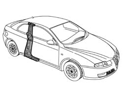
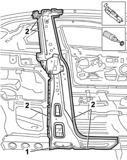
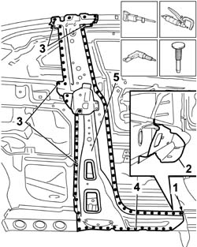
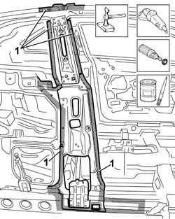
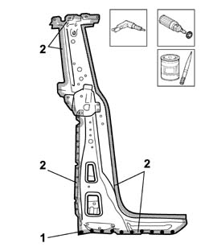
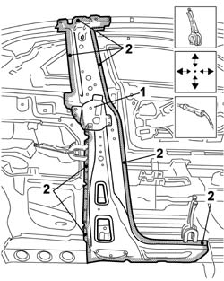
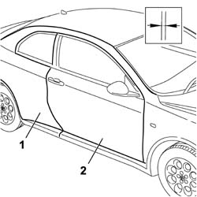
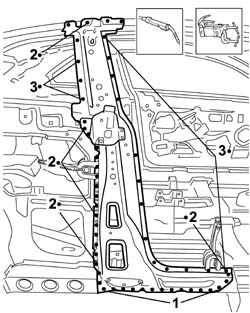
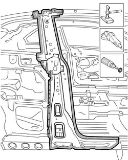
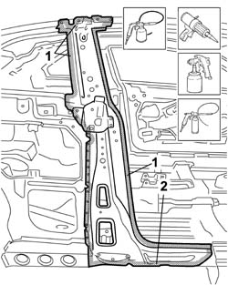

7210B10 TAIL LIGHT SEAT
- Path
- Procedures > 72 PANELS AND FRAME > 7210 REMOVING REFITTING > 7210B STRUCTURE ELEMENTS-CENTRAL AND REAR PART > 7210B10 TAIL LIGHT SEAT
- Kind
- repair procedure (removal / refitting; the operation number is the code)
- Applies to
- all engines; all production periods
- Interactive page
- https://sloeber94.github.io/elrnDB-aGt/en/#/125002047
Applies to: all engines; all production periods
 Removing
Removing
 Refitting
RefittingOp. 7210E52 REAR WING (1), LH OR RH
Check if any of the connected parts are deformed by checking body alignment dimensions. Use appropriate measurement tools (reference rigs, templates or gauges).
Straighten the body if necessary.

Applies to: all engines; all production periods
1. Remove the PVC treatment from the door sill using a pneumatic knife and appropriate blade.
2. Use a rotary brush to clean the panel edges in order to expose the weld spots.

Applies to: all engines; all production periods
1. Use a hacksawing machine to follow the cutting lines shown in the figure.
2. Cross-sections representing cutting point to allow the operator to adjust cutting position and depth in order to avoid damage to the underlying panels.
3. Use a chamfering machine to crop weld points around the edge of the pillar.
4. Drill out spot welds in the areas shown in the figure.
Use a chisel and mallet to remove spots drilled previously.
5. Remove the pillar.

Applies to: all engines; all production periods
Straighten the car edges using a mallet and profiled stake.
Use a grinding wheel to remove the weld spot residues.
Use a rotary brush to clean treated areas.
1. Apply the electric weld paint finish.

Applies to: all engines; all production periods
1. Working at the bench, drill holes in the part at the points shown.
2. Use a rotary brush to remove the corrosion-proofing from around the inner and outer edge.
Apply electrogalvanised paint on the newly-treated eges.

Applies to: all engines; all production periods
Refitting
Removing1. Lay the central pillar on the car correctly and secure using self-locking grippers.
2. Tack the part by carrying out some spot welds.

Applies to: all engines; all production periods
1. Position the rear wing.
2. Fit the front door.
Check alignment and gaps around the edges, then remove the door and the rear wing.

Applies to: all engines; all production periods
1. Use a MIG welder to fill the holes made previously.
2. Use a spot welder to weld the areas shown in the figure.
3. Make a few tacks only in these areas: the part will be welded fully when the rear wing is fitted.

Applies to: all engines; all production periods
Correct any deformations in the panel using a profiled stake and mallet.
Crimp the reference tabs.
1. Use a grinding wheel to level the welds.
Use a rotary brush to clean the newly-welded areas.

Applies to: all engines; all production periods
1. Apply rust-proofing to newly-welded areas.
Seal the joint lines between the part and the car.
Apply paint.
2. Apply wax oil inside the door sill.

Applies to: all engines; all production periods